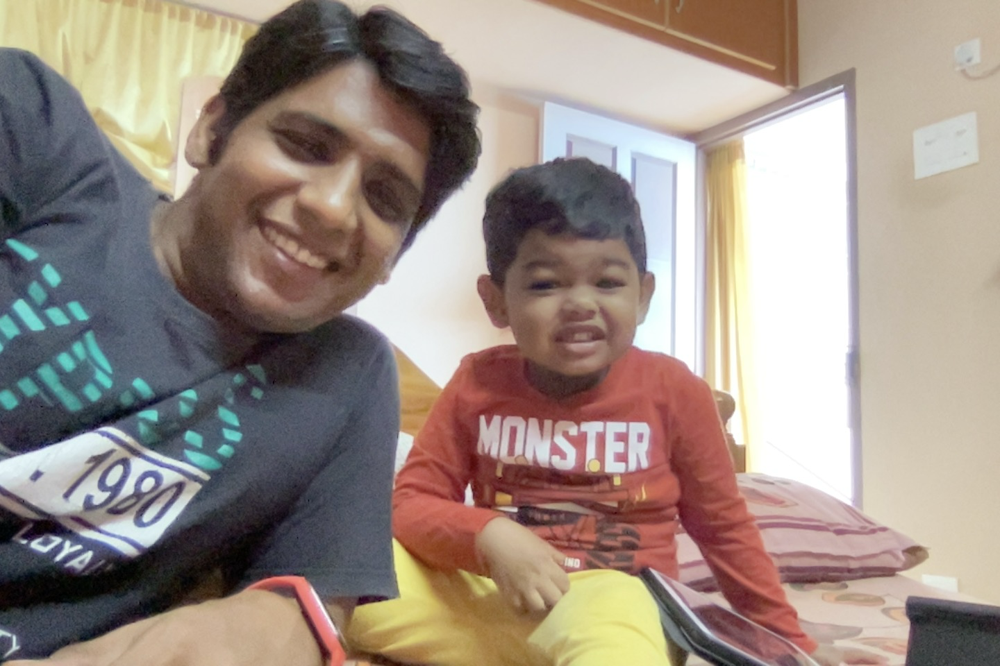

Summary
Smiling (at times stone faced), passionate DAD (abosolute family Man) diversifying on my skills.
Started as a Professional Technical Trainer (in heart still I am), working now as a Customer Success Engineer
(fancy name for Tech Support), advocating products, tend to always give a short speech on best practices,
Troubleshooting (joy of finding the hidden culprit), educating customers, teams members (and learning from them),
thats how my day turns out
Education
- Bachelor of Engineering (Electrical & Electornics)
(2001-2005)
K.L.N College of Engineering
- Masters in Business Administration (Systems)
(2008-2010)
SSMS IMR
Work Experience
- NOC Engineer
Telsource IT Services Pvt Ltd
Jun'2010-Dec'2011
- Providing Level 1 support to Customers over Chat and Phone
- Analyzing Answer Seizure Ratio (ASR) reports containing information on the ratio of successful calls to the total number of outgoing calls
- Assuring that the most attractive tariff option is used throughout the mobile gateway network
- Monitoring the Network performance parameters
- Detecting carriers with low or zero ASRs
- Technical Trainer
Team India Career Hub (TICH)
Oct'2012-Mar'2013
- Conducting Classes for various courses like CCNA, CCNP R/S, CCNA-Security, and CCNP-Security
- Conducting Seminar in Engineering Colleges to promote training institute
- Sr. Technical Trainer
Movate (CSS Corp)
Apr'2013-Mar'2017
- Conducting Technology Training Sessions for New Hires
- Individual Development Programs for floor engineers across projects in Movate
- Coordinating with Clients & Floor Managers to understand the Technology
training requirements for floor engineers and conducting training sessions with
the designed curriculum
- Sr. Customer Success Engineer
Trellix
Apr'2017-Present
Skills
- TCP/IP
- Networking
- Linux
- Bash Scripting
- Regex
- Delivering Training
Awards
- Mentor of the Quarter in Q2'2023
- Star Performer
Hobbies
Contact-Me